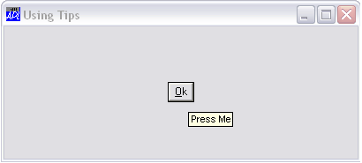

Tips work in a very similar way to Hints. Most of the GUI objects that have a visible presence on the screen have a Tip property and a TipObj property. Exceptions are Menus, MenuItems and other pop-up objects. The TipObj property contains the name of a TipField object. This is a special kind of pop-up object whose sole purpose is to display tips. When the user moves the mouse pointer over the object the corresponding TipField appears displaying the object’s Tip. When the mouse pointer moves away from the object, the TipField disappears. If an object has a Tip, but its TipObj property is empty, the system uses the TipObj defined for its parent, or for its parent’s parent, and so forth up the tree. If there is no TipObj defined, the Tip is simply not displayed. Normally, you need only define one TipField for your application, but if you want to use different colours or fonts for individual tips, you may define as many different TipFields as you require. Again, it is very simple to turn tips on and off.
This example shows how easy it is to associate a tip with an object, in this case a Button.
'Test'⎕WC 'Form' 'Using Tips'('TipObj' 'Test.Tip')
'Test.Tip' ⎕WC 'TipField'
'Test.B' ⎕WC 'Button' '&Ok' ('Tip' 'Press Me')
Using Tips